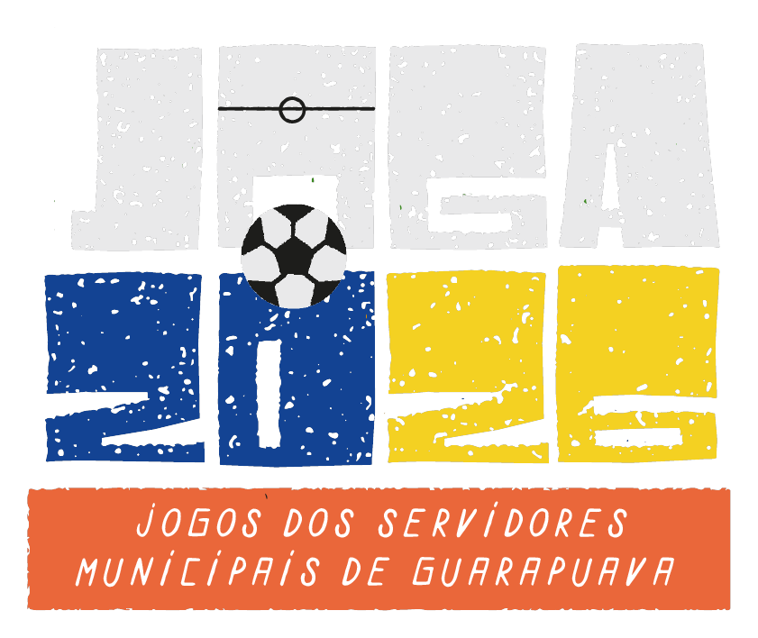
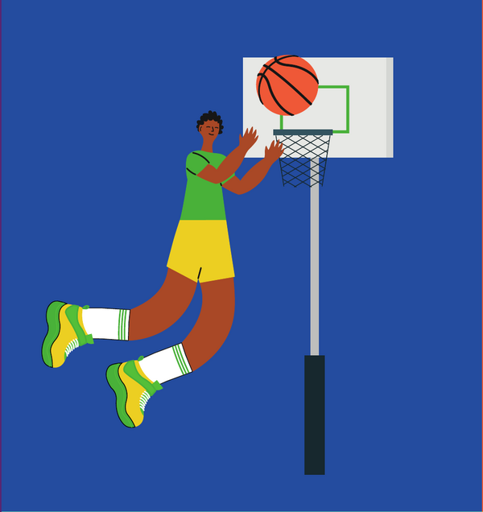
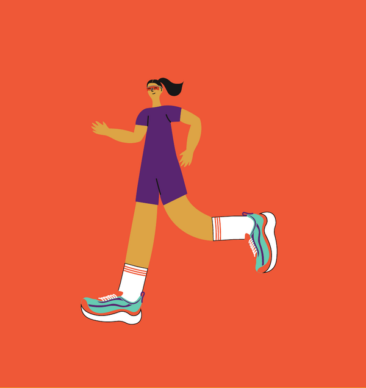
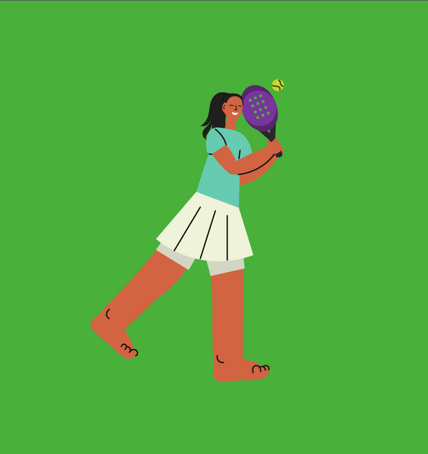
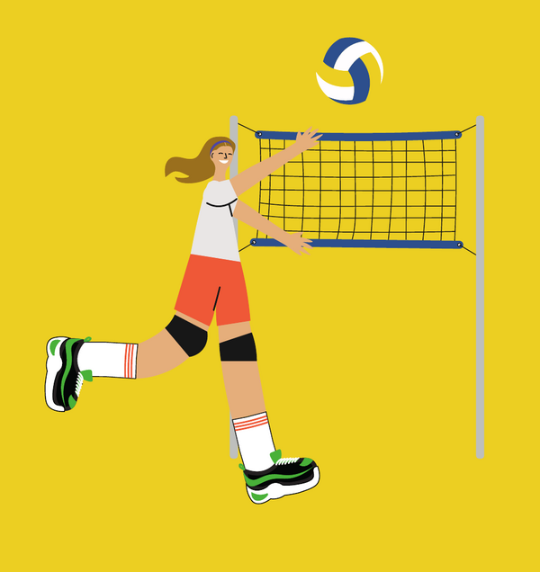
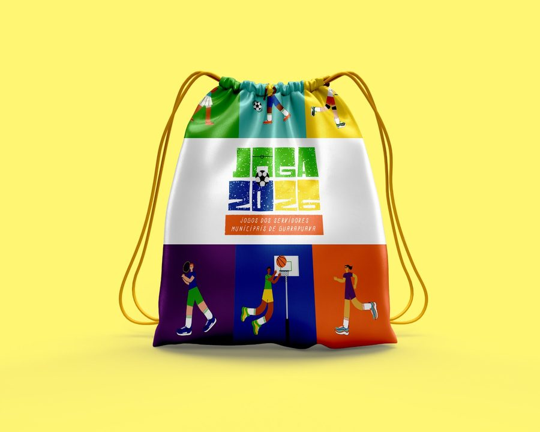
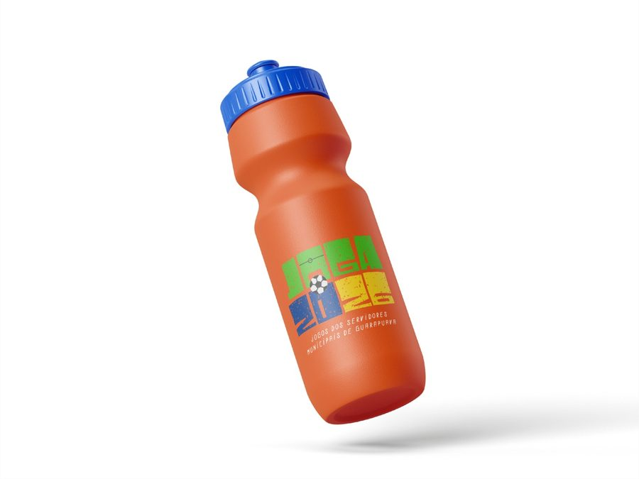
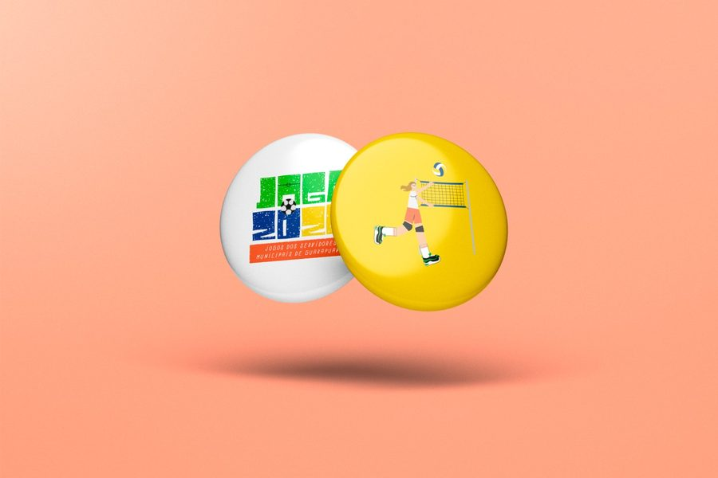
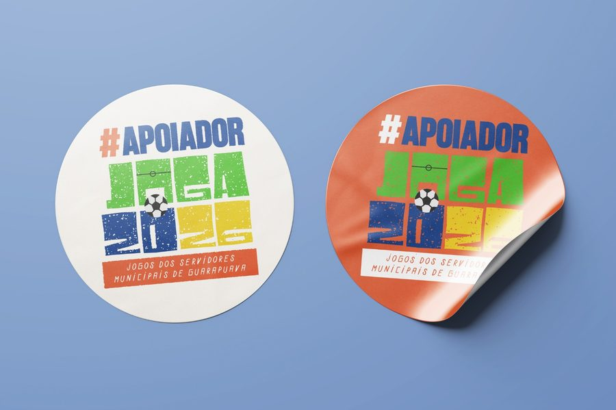

01
Saúde e bem-estar
Estimula a prática esportiva regular e o cuidado com a saúde física e mental de mais de dois mil trabalhadores do município ao longo de todo o ano.
O JOGA 2026 — Jogos dos Servidores Municipais de Guarapuava reúne mais de dois mil servidores de todas as secretarias em competições, integração e celebração de 26 de outubro a 07 de novembro. Este é o convite para a sua empresa participar dessa história.

O JOGA é o programa esportivo oficial da Prefeitura de Guarapuava voltado aos servidores municipais. Nasceu para promover saúde, qualidade de vida e integração entre as secretarias — e virou, em uma única edição, um dos eventos mais aguardados do calendário interno do município.
Em 2026 o programa chega à sua segunda edição, maior em todos os sentidos: mais modalidades, mais dias de competição e a expectativa de dobrar o número de participantes. A realização é da Prefeitura Municipal de Guarapuava, com coordenação compartilhada entre as secretarias de Administração, Comunicação, Cultura, Turismo e Esporte.
Estimula a prática esportiva regular e o cuidado com a saúde física e mental de mais de dois mil trabalhadores do município ao longo de todo o ano.
Aproxima secretarias que raramente se encontram no dia a dia. Seis equipes mistas, formadas por servidores de diferentes áreas, disputam juntas.
Reforça o vínculo do servidor com a instituição e com Guarapuava. O JOGA é celebração pública do trabalho de quem atende a população todo dia.
Dados oficiais do plano de trabalho do JOGA 2026. Os valores de 2025 são realizados; os de 2026 são a previsão aprovada pela coordenação geral.
Servidores inscritos nas modalidades em 2026
Números realizados da 1ª edição
De 2025 para 2026, em participação
Distribuídas em 7 blocos de competição
Do kit atleta à premiação — inventário completo abaixo
Azul, Verde, Amarelo, Branco, Preto e Laranja
Agrupamento das 23 modalidades ao longo de todo o período de competição
O servidor municipal é um dos públicos mais consistentes de Guarapuava: renda previsível, vínculo empregatício estável e vida enraizada no município. Ele consome, decide e influencia localmente — e leva a família junto para o evento.




Não é um dia de evento: o JOGA ocupa o calendário da cidade de 26 de outubro a 07 de novembro, com presença da marca nas arenas, nos materiais impressos, no site oficial do JOGA e no conteúdo produzido antes, durante e depois. A exposição se estende por semanas.
Apoiar o JOGA é associar a marca a saúde, esporte, integração e valorização do servidor público. É um posicionamento positivo e apartidário, ligado ao cuidado com quem trabalha pela cidade.
O JOGA 2026 inclui a Arrecadação Solidária, ação de coleta de doações que reverte para entidades da cidade. Sua empresa entra como parceira de um resultado concreto para Guarapuava.
A empresa apoiadora recebe o selo oficial de apoiador e pode usar a marca do JOGA 2026 na própria comunicação — site, vitrine, redes e materiais internos — durante toda a temporada do evento.
Pontos de contato disponíveis para os apoiadores do JOGA 2026. A combinação exata depende da cota escolhida e é definida em conjunto com a Coordenação de Comunicação.
Squeeze, sacochila e materiais entregues a cada participante inscrito. Marca impressa, com o participante o ano inteiro.
Cerimônias de abertura e encerramento, entrevistas e fotos oficiais — o fundo de imagem mais fotografado do evento.
Banners, faixas e testeiras nos locais de competição das 23 modalidades, ao longo de todo o período de competição.
Logo e link na área de apoiadores do site, ativos durante toda a temporada do evento.
Estande, tenda ou ponto de experiência da marca nos locais de competição, com contato direto com o público.
Assinatura nas peças audiovisuais exibidas nas arenas e nas cerimônias de abertura e encerramento.
Citação da marca nas chamadas e anúncios feitos durante as partidas e nas cerimônias.
Presença na cerimônia de premiação, entrega de troféus e medalhas e nas fotos oficiais dos pódios.
Cartazes, tabelas de jogos, crachás, regulamento impresso e peças de sinalização distribuídas nos locais.
O apoio pode ser em recurso financeiro ou em bens, materiais e serviços, com valor de mercado estimado. Estes são os itens que o JOGA 2026 precisa — e que levam marca junto.

Entregue a cada participante inscrito. Sai do ginásio nas costas do atleta e continua circulando pela cidade meses depois do evento.

Fica na quadra, na mesa de trabalho e na academia. É o item do kit com maior tempo de exposição por participante.

Colecionáveis por modalidade e por equipe. Custo baixo de produção e adesão alta — vão parar no crachá e na mochila.

O selo #APOIADOR em adesivo: vitrine, balcão, notebook, garrafa e carro. A marca do apoiador circula onde o servidor estiver.
Medalhas · Troféus · Arbitragem · Sonorização · Locação de espaços
Água mineral · Isotônicos · Frutas
Camisetas das seis equipes · Credenciais · Sinalização das arenas
Quantidades e especificações constam do Anexo IV do Edital de Chamamento Público nº 02/2026 – SMAD. A proposta pode cobrir um item inteiro ou uma parte dele.
As quatro categorias e as faixas de valor são as do Edital de Chamamento Público nº 02/2026 – SMAD — e valem tanto para aporte financeiro quanto para bens, materiais e serviços avaliados pelo valor de mercado. As contrapartidas abaixo são a base da conversa.
Categoria de maior exposição. Patrocinadores da mesma categoria recebem tratamento isonômico, conforme o edital.
Contrapartida mínima prevista no Anexo V do edital.
Faixa pensada para empresas de bairro e negócios locais.
Aberto a apoio em produtos, materiais, estrutura, alimentação ou serviços.
Como participar: a proposta é protocolada na Secretaria Municipal de Administração, no prazo do edital, com o formulário do Anexo I. Em apoio com bens ou serviços, informe o valor estimado de mercado — é ele que define a categoria. Fale com a organização antes de protocolar: a gente ajuda a montar a proposta.
Materiais impressos, kits e peças de sinalização entram em produção antes do evento. Quanto antes o apoio é confirmado, maior o número de pontos de contato que a marca alcança.
Definição do orçamento e do plano de mídias do JOGA 2026.
Regulamento e calendário de competições fechados.
Chamamento Público nº 02/2026 aberto: é agora que as propostas de patrocínio são protocoladas.
Etapa atualAssinatura dos termos e produção dos kits, banners e materiais já com as marcas apoiadoras.
JOGA 2026 acontece: competições, cerimônias e cobertura oficial em toda a cidade.
Cada modalidade é um ponto de contato próprio, com público, local e horário distintos. Modalidades em destaque na 2ª edição:
Procure a organização do JOGA 2026 para receber a proposta com as contrapartidas detalhadas e tirar dúvidas sobre as categorias. Estamos abertos a apoio financeiro, em produtos, em serviços e em estrutura.
Coordenação de Comunicação · Prefeitura de Guarapuava
Fale com a equipe do JOGA para receber a proposta com as contrapartidas detalhadas e entender qual categoria combina com a sua empresa.
Chamamento Público nº 02/2026 – SMAD
As propostas são protocoladas no Protocolo Geral do Município — Rua Brigadeiro Rocha, 2.777, Centro, Guarapuava/PR.
Arrecadação
Solidária
O JOGA 2026 vai além da competição. Durante todo o período dos jogos, a Arrecadação Solidária mobiliza servidores, equipes e público em torno da coleta de doações destinadas a entidades de Guarapuava. Empresas apoiadoras participam como parceiras da ação e têm sua marca vinculada ao resultado entregue à cidade.